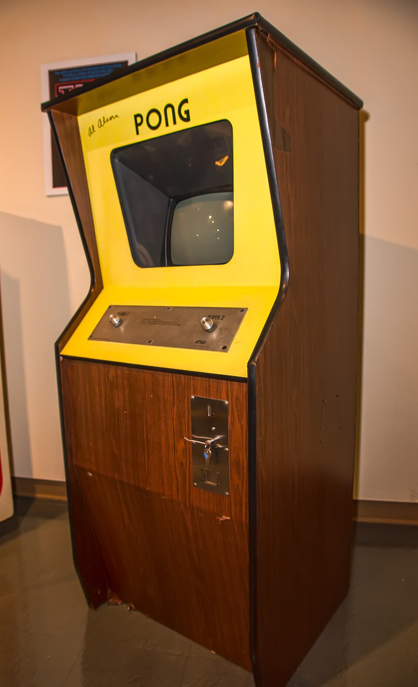

What
Video games are a form of interactive digital media where players engage with virtual environments using an interface or device.

- Engaging interactive storytelling
- Challenges that test problem-solving, reflexes, and planning.
Who
I've played video games since I was a child and since then I've loved playing them.
One of the first games I've ever played was Sonic The Hedgehog (2006), and that game does suck really bad and I could never get past the first stage. I did play better games after that though.
I've played mostly RPGs and platformers.
When
I would say that I try to only play video games when I have free time and when I've already spent time on my responsibilities. Besides that, there's not really a specific time when I play games.
Playing a game when you're very tired can lead to you having less fun and performing worse.
Where
Depending on what kind of system you're playing on, you could play in many different locations.
| Setup Location | Primary Advantage | Best Suited For |
|---|---|---|
| Computer or Console | High performance | Competitive multiplayer and heavy simulation games |
| Portable Handheld | Mobility and flexibility | Playing during travel |
Playing while sitting at a good location ensures that you stay comfortable while playing.
How
Getting started in video games involves choosing your preferred platform: PC, console, or mobile and exploring genres that match your personal taste.

- Research hardware or cloud-streaming options that fit your budget.
- Sample diverse genres (strategy, puzzle, adventure) to discover what excites you most.
- Join communities or forums to share tips, tricks, and recommendations with fellow enthusiasts.
Why
Playing video games helps me to reduce my stress.
Playing games also has been proven to help with problem-solving skills.
AI Prompts
I used Gemini to get the general webpage up and it also gave me image suggestions.
It also gave the site colors that I like enough to keep.